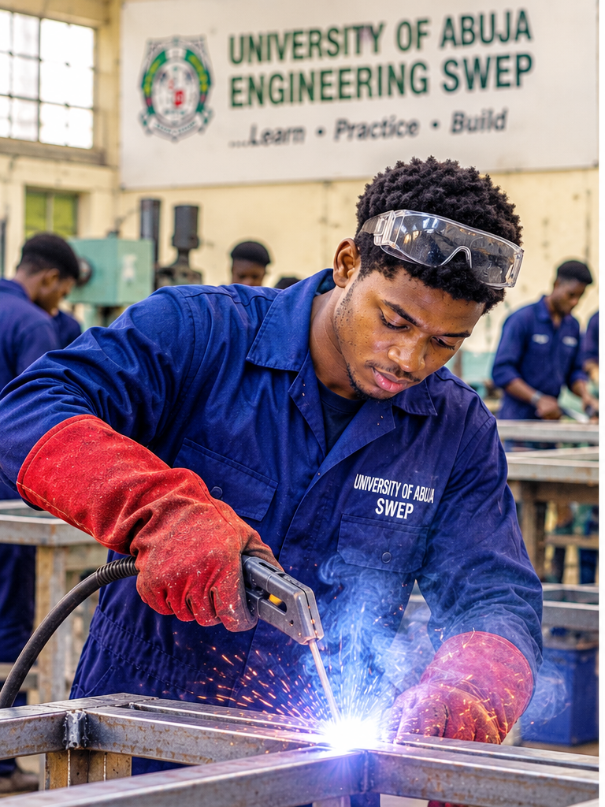
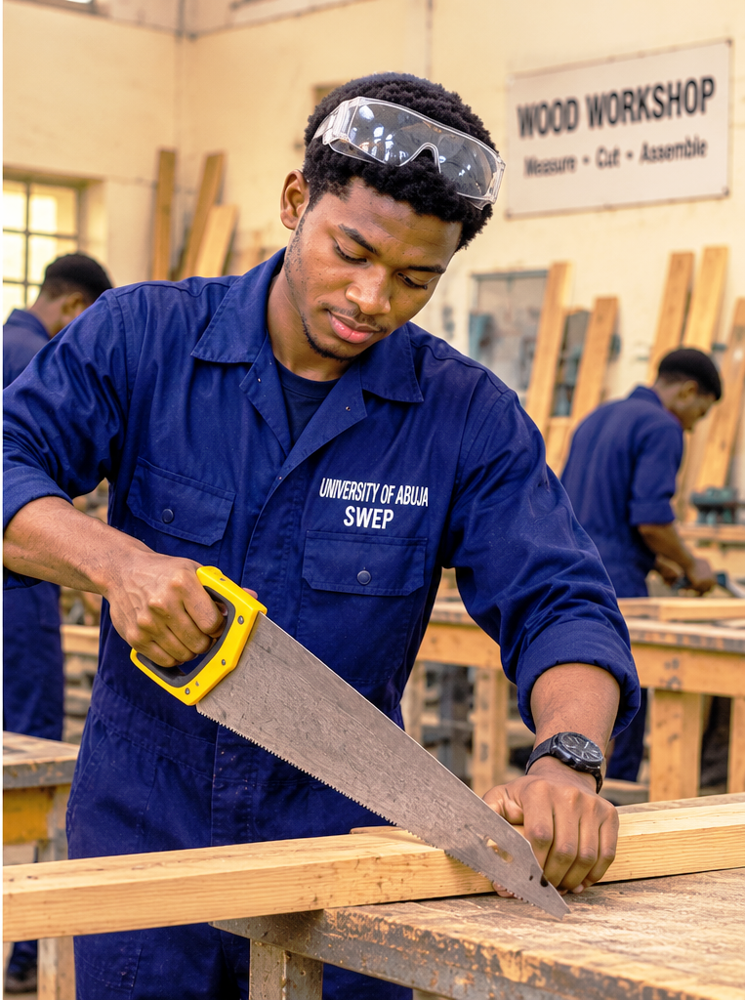
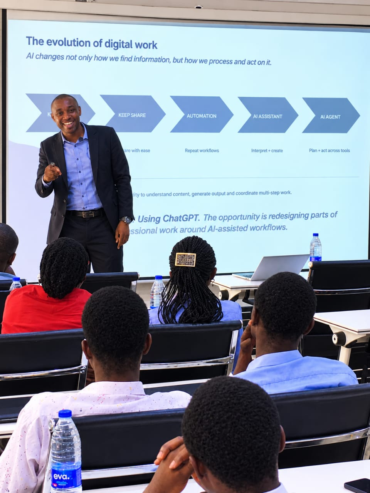
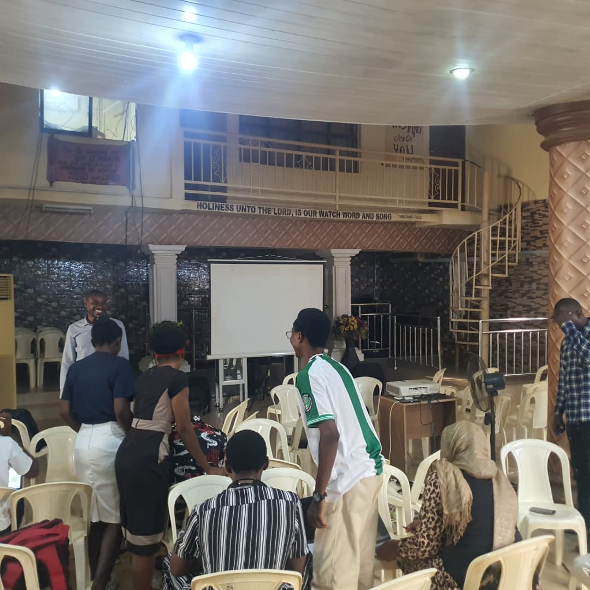
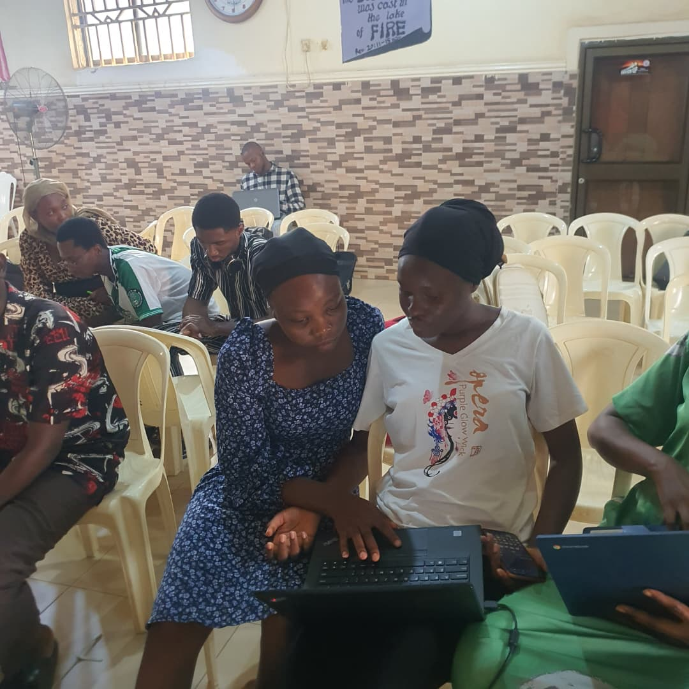
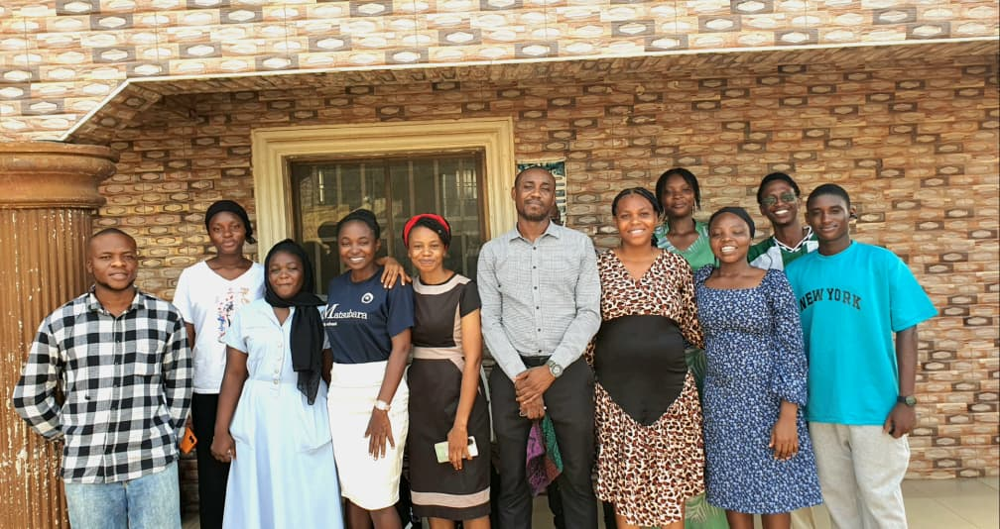

PROTEK
01 / 02
Protek Stationery
An inventory management system being developed to improve stock monitoring and management across three stationery shops.
HELLO, I'M
An aspiring software developer, aerospace engineering undergraduate, and gospel music enthusiast passionate about learning, creating, and making an impact.
A curious and ambitious individual exploring the worlds of technology, engineering, and music.
Outside my academic and creative interests, I enjoy playing and watching chess. I find the game fascinating for its strategy, patience, creativity, and constant demand for thoughtful decisions.
I'm also an admirer of Magnus Carlsen and his exceptional understanding of the game.
CHESS • STRATEGY • CURIOSITY THE ART OF CHESS
THE ART OF CHESS
Excellence on 64 squares.
I admire Magnus Carlsen for his creativity, strategic understanding, composure and remarkable approach to the game.
Explore his chess profile ↗ Photograph: Wikimedia CommonsMY TECH JOURNEY
Exploring the world of software development, learning to build functional applications, and transforming ideas into practical solutions.
Learning server-side programming and the logic behind dynamic web applications.
Currently LearningExploring modern PHP development, application architecture, routing, controllers, and database interaction.
Currently LearningLearning how to structure, manage, retrieve, and maintain application data.
Currently LearningINVENTORY MANAGEMENT SYSTEM
A planned inventory management solution designed around the stock operations of three stationery shops at the University of Abuja.
The goal is to simplify stock monitoring, record incoming and outgoing items, and improve visibility across the shops.
This project is currently being developed as part of my practical learning journey.
PROTEK / INVENTORY
INVENTORY OVERVIEW
BEYOND THE CODE
My journey in Aeronautical and Aerospace Engineering is driven by curiosity about flight, engineering systems, and the technology that makes aviation possible.
I am an Aeronautical/Aerospace Engineering undergraduate at the University of Abuja, developing a foundation in engineering principles and their practical applications.
My academic interests include aircraft systems, aerodynamics, fluid mechanics, and the broader science behind aerospace technology.
Engineering SWEP
My Students' Work Experience Programme provided opportunities to engage with practical workshop activities, tools, materials, and engineering processes.
Exposure to workshop environments, tools, equipment, and practical engineering activities.

Practical exposure to metal frame assembly, finishing, painting, and refurbishment.

Experience with plywood, measuring, cutting, joining, sanding, and assembling wooden structures.
Aerodynamics & Flight Mechanics
↗Aircraft Design & Systems
↗Computational Engineering
↗Emerging Aerospace Technologies
↗THE ART OF EXPRESSION
Beyond engineering and technology, music gives me another way to express creativity, connect with people, and contribute through service.
Gospel music is an important part of my life. I enjoy singing, participating in praise and worship, and using my voice to communicate messages of faith and inspiration.
Over time, I have had opportunities to serve as a chorus leader and lead singer at different programmes, both on campus and beyond.
These experiences continue to strengthen my confidence, musical expression, teamwork, and appreciation for music ministry.
Expressing faith and inspiration through gospel music and vocal performances.
Leading choruses, coordinating vocal participation, and contributing to collective musical expression.
Participating in gospel programmes, praise sessions, and musical presentations.
A glimpse into my musical experiences.
MY WORK & CREATIONS
A collection of projects through which I explore, learn, experiment, and turn ideas into practical work.
An inventory management system being developed to improve stock monitoring and management across three stationery shops.
A personal website designed to present my journey across software development, aerospace engineering, and gospel music.
Every project is another opportunity to learn, improve, and create something meaningful.
Explore my professional profile and personal journey through the documents below.
An overview of my academic background, technical skills, experience and professional interests.
A personal account of my experiences, growth, interests, values and aspirations.
Every meaningful journey involves learning, guidance and the willingness to improve. My software development journey is shaped by practical lessons, mentorship and continuous personal effort.

Software Development Tutor
Learning becomes more meaningful when knowledge is shared through guidance and practical instruction. I'm grateful for the opportunity to learn software development under the guidance of Engr. Martin Obinna.
His teaching forms part of my ongoing journey towards developing practical programming skills and becoming a better software developer.
Some moments from my physical learning experiences, practical sessions and interactions with fellow learners.



A glimpse into our physical software development classes.
An edited recap of our most recent physical class, capturing moments of learning, interaction and collaboration.
THE JOURNEY WITHIN
Growth is a continuous process. Beyond the qualifications I pursue and the skills I acquire, I believe in becoming a better, more intentional and responsible individual.
I am learning to value consistency over temporary motivation, discipline over convenience, and meaningful progress over the pressure to have everything figured out.
Every experience, challenge, and new lesson presents an opportunity to learn and improve.
Remaining curious, acquiring new knowledge, exploring unfamiliar ideas, and developing skills that expand my capabilities.
Building better habits, managing my time intentionally, and learning to remain committed to important responsibilities.
Reflecting on experiences, learning from mistakes, reading meaningful books, and developing a broader perspective on life.
Allowing my Christian faith, values, and understanding of purpose to influence how I approach life and my responsibilities.
I believe personal development also comes through reading, reflection, and applying valuable lessons to everyday life.
Exploring principles of personal responsibility, intentional living, effective relationships, and continuous improvement.
PERSONAL DEVELOPMENT READINGI see growth not as a destination, but as a lifelong commitment to becoming better.
Whether it's about software development, aerospace engineering, music, or a meaningful collaboration, I'd be glad to hear from you.
gideonudu2008@gmail.com
+234 814 859 8111